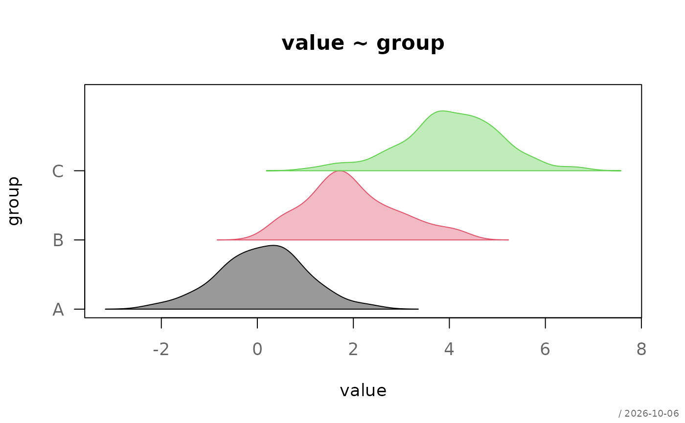
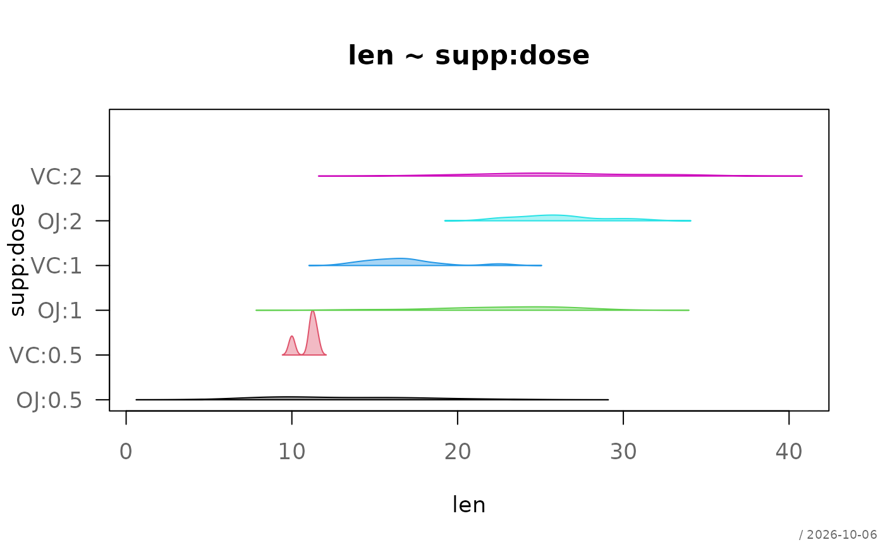
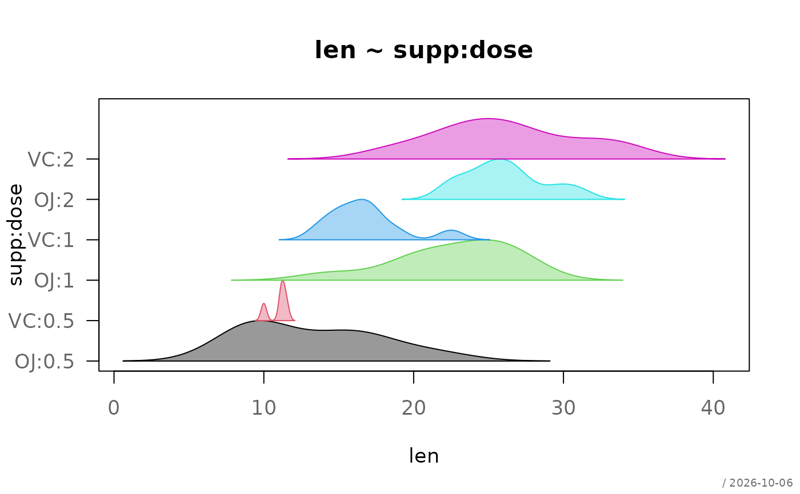

Draws stacked kernel density estimates (ridge plot) for grouped data. Each group is displayed as a density curve shifted along the y-axis.
Usage
# Default S3 method
plotRidge(
x,
...,
main = NULL,
xlab = "",
ylab = "",
xlim = NULL,
ylim = NULL,
bw = "nrd0",
normalize = c("global", "group"),
add = FALSE,
scale = 1,
spacing = 1,
col = NULL,
border = NULL,
lwd = 1,
lty = 1,
fill = TRUE,
grid = NA,
stamp = .useTheme
)
# S3 method for class 'formula'
plotRidge(
formula,
data,
subset,
na.action = na.omit,
main = NULL,
xlab = "",
ylab = "",
...
)Arguments
- x
a numeric vector, or a list of numeric vectors representing groups.
- ...
further numeric vectors (unnamed), each forming a group, or graphical parameters passed to
par().- main
main title.
NULL(default) derives the title from the input: the names of the data arguments, or the formula."",NA, orFALSEsuppress the title and compact the top margin.- xlab, ylab
axis labels. For the formula method, empty labels default to the response and the grouping variable.
- xlim, ylim
axis limits.
- bw
bandwidth for
stats::density().- normalize
how the density heights are scaled to
scale:"global"(default) divides all densities by the highest peak of all groups, so that heights stay comparable across groups (as in ggridges);"group"divides each density by its own peak, so that every ridge reaches the full height. Use the latter when a single narrow group would otherwise flatten all others.- add
logical; if
TRUE, adds to an existing plot.- scale
scaling factor for density height.
- spacing
vertical spacing between ridges.
- col
fill color(s), recycled over the groups.
NULL(default) uses the palette.- border
border color(s), recycled over the groups.
NULL(default) usescol.- lwd
line width(s).
- lty
line type(s).
- fill
logical; fill area under densities.
- grid
logical,
NA, or list controlling grid.- stamp
controls the corner stamp.
.useTheme(default) resolves togetTheme()$stamp.TRUE/FALSE/NULL, a string, or a named list forstamp().- formula
a formula of the form
y ~ group, ory ~ a:bfor the cells of several grouping variables.y ~ a + bis not accepted, seebedrock::resolveFormula().- data
an optional data frame containing the variables in the formula.
- subset
an optional expression indicating which observations to use, evaluated in
data(subset = len > 10), as inboxplot().- na.action
a function specifying how missing values are handled, defaults to
na.omit().
Details
Ridge plots are useful for comparing distributions across multiple groups. Each density is normalized and vertically offset, improving readability compared to overlaid density plots.
Examples
set.seed(1)
df <- data.frame(
value = c(rnorm(100), rnorm(100, 2), rnorm(100, 4)),
group = rep(c("A", "B", "C"), each = 100)
)
plotRidge(value ~ group, data = df)

# subset and the cells of two grouping variables
plotRidge(len ~ supp:dose, ToothGrowth, subset = len > 8)

# the narrow group VC:0.5 flattens all others; scale each ridge to its
# own peak instead
plotRidge(len ~ supp:dose, ToothGrowth, subset = len > 8,
normalize = "group")
